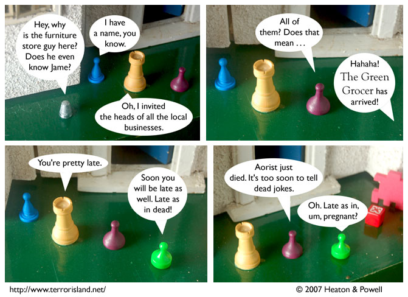

Strip #159
— Monday, June 18, 2007
Terror Island writing tip: Specify that characters have names. This makes them more relatable.
Notes, Thoughts, &c.
Ben’s Notes
As you may recall, the Green Grocer runs a local grocery store. He only started doing the supervillainy thing when Sid and Stephen suggested it to him. In hindsight, that wasn’t a very good move on their part.
Lewis’s Notes
I’m in Chicago or Toronto right now. Or some other city. I’m pretty sure it ends in the letter O. Probably not San Francisco, because Ben would have remembered that. Tokyo?
I wrote Lewis’s comments today. -Ben